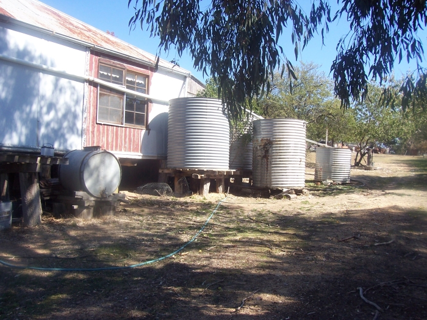

How we found the place
When Lesley and I first met in 2006 we found straight away that we had similar dreams about making a "tree change". Quite early in the relationship we started looking at land, mainly around the Bathurst/Blayney area. The prices were not what we could afford, but the process of looking honed our desires and got us talking about what we really wanted, and what we wanted to do with the land.
After I moved into Lesley's house in Campbelltown (from Katoomba) we concentrated on our new life together and didn't think so much about land. But after about 6 months or so we ran out of room in our little half-house and started looking for a bigger place to rent locally. We were disappointed in the prices and availability, and on a bit of a whim Lesley went back to looking for properties. She found a half-acre block in a town called Rye Park (never heard of it) near Boorowa (never heard of it) near Yass (okay, knew Yass). When I rang the agent, he said there was a house on an acre in the same town for $60,000. It turned out that the owner had only told the agent he wanted to sell the place that same morning - it wasn't officially even on the market yet. It sounded too good to be true, but we went for a drive anyway and we were amazed at what the place was. This is how we first saw it:
The inside was pretty bad (as Jack can testify):
And there was a possum in residence in the bathroom...
But there were plenty of water tanks:

And it had phone and electricity. We could start staying over straight away. For a while it would be a bit like "camping with walls" as Lesley said, but we knew it would only be until we made some improvements, and it was a lot better than having to start with a tent.
We made Gary (the owner who is now a friend) an offer and he accepted $57,000, which the bank agreed to. Our adventure had begun!
Home
House
October 2013
Asbestos
Verandah
Tanks
Fort Veg
Orchard
Pacas